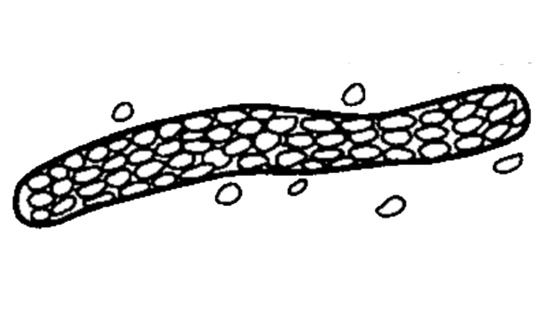
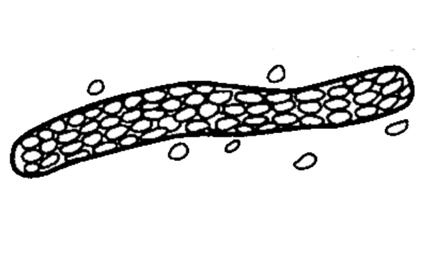

- Formed by precipitation of proteins, and aggregation of cells within the renal tubules. Most of them dissociate in alkaline urine, and diluted urine (specific gravity ≤ 1.010) even in the presence of proteinurea. Most of them are transparent. Thus to look them clearly, it is important to lower the condenser and close (partially) the diaphragm. Look them under 10 x of the microscope.
• Appearance :
- Transparent (clear), cylindrical shape.
- Have parallels side with slightly round ends.
Presence of large number of hyaline casts may show possible damage of glomerular capillary membrane. This damage permits leakage of protein through glomerulus and result in precipitate and gel formation in the tubule.
• Thus this may indicate :
1. Nephritis.
2. Meningitis.
3. Chronic renal disease.
4. Congenital heart failure.
5. Diabetic nephropathy.
6. temporarily in the case of :
- Fever.
- Postural orthostatic strain.
- Emotional stress.
- Strenuous exercise.
- After anesthesia.
• Appearance :
- More similar in appearance with hyaline casts and in which homogenous, course granules are seen.
- More dense (opaque) than hyaline cast, thus can be more easily seen than hyaline casts. They are also shorter and broader than hyaline casts.
• Granular casts may be seen in :
1. Acute tubular necrosis.
2. Advanced granulonephritis.
3. Pyelonephrites.
4. Malignant nephrosicosis.
5. Chronic lead poisoning.
6. In healthy individuals these casts may be seen after strenuous exercise.
(Renal Failure Casts) :
- Not seen in normal individuals.
• Appearance :
- Shorter and broader than hyaline casts.
- Composed of homogeneous, yellowish materials.
- Broad waxy casts are from two to six times the width of ordinary.
- casts and appear waxy and granular.
- Have high retractile index.
- May occur from cells (WBC, RBC, or Epithelial) casts, hyaline casts.
• Waxy casts are found in :
1. Chronic renal disease.
2. Tubular inflammation and degeneration.
3. Localized nephron obstruction.
* The presence of waxy casts indicates severity of renal disease.
- normally not seen in health individuals.
• Appearance :
- These are casts, which contain fat droplets inside theme.
- Fat droplets are formed after accumulation of fat in the tubular vessels, especially tubular epithelial and finally disintegrated.
- The occurrence of fat droplets, oval, fat bodies, or fat casts is very important sign of nephritic syndrome.
• Fatty casts are found in :
1. Chronic renal diseas.
2. Inflammation and degeneration of renal tubules.
- contain :
1. Epithelial cells .
2. White blood cells.
3. Red blood cells.
- normally not seen in normal individual.
• Appearance :
- These are casts in which cellular elements are seen.
- Formed usually after accumulation of cellular element in the renal tubules.
 

• Cellular casts are found in :
1. Epithelial / renal / casts mostly seen in tubular degeneration.
2. Red cell cast usually seen in acute glomerulonephritis cases.
3. White blood cell casts seen mostly during pyelonephrites conditions.
1. Red blood cell cast :

2. White blood cell cast :
3.Epithelial cell cast :